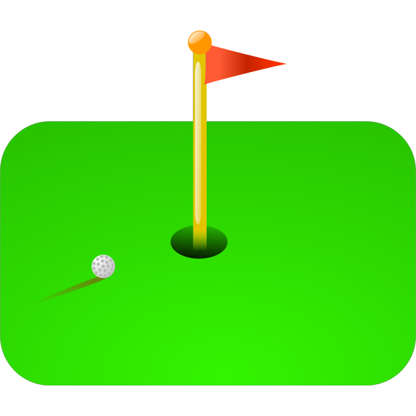
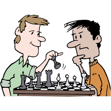
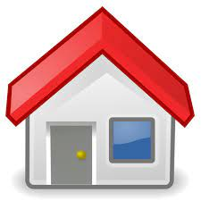

Background:
Born in Manchester
Grew up in Urmston. Older Brother Younger Sister. 5 foot 11, brown hair blue eyes and ginger beard.
Interests:
- Golf
- Learning to code
- Chess
- Cooking
- Gym
- Man City
- crap tv shows


Goals:
- Financially Stable
- Home Owners
- work for myself
- Healthy and fit
- Scratch Golfer
